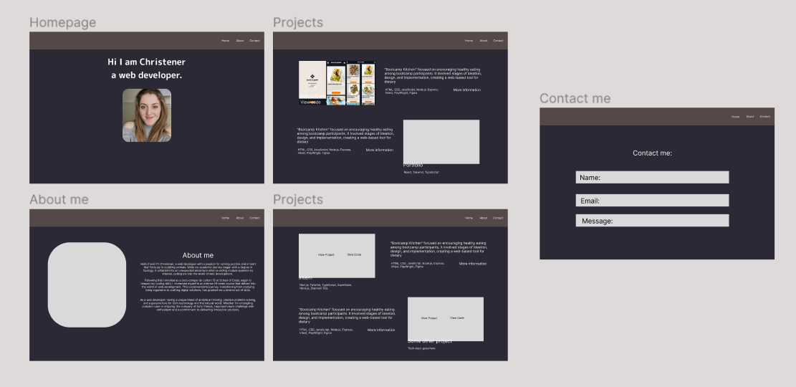
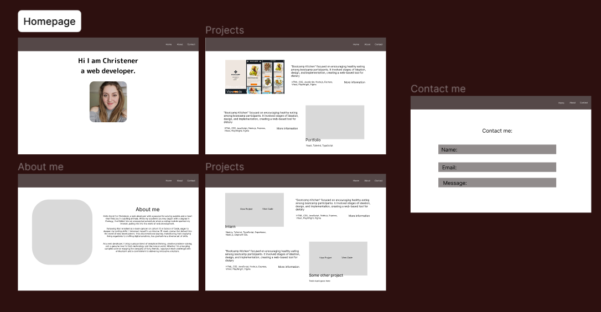
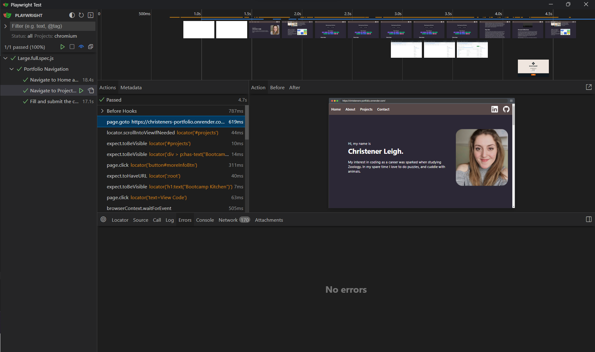

Portfolio
Tech Stack
HTML
Tailwind
JavaScript
CSS
Node.js
Playwright
Figma
Git
Overview
This was a solo project where I used my newly acquired tech skills to create a portfolio website.
Day 1-2:
I started by looking at various online portfolios from people showcasing their art projects, architecture builds, and developer skills. This allowed me to gain some inspiration and ideas for my own portfolio. I then began creating wireframes using Figma, choosing the layout and color palette I was going to use. I knew I wanted to make my app fully responsive and have an option for light/darkmode.


Day 3-4:
I started by deploying a simple 'Hello World!' application using Vercel to ensure continuous deployment. After that, I structured the homepage in HTML and used Tailwind classes to style different sections. While the layout closely followed the wireframes, subtle adjustments to enhance user experience were made. This involved fine-tuning the positioning of elements, refining styling choices, and adjusting font sizes to optimize readability across various devices and screen sizes. For example, I removed the overlay over the image which had an opacity as it was not good for accessibility. To make the navigation bar a bit better, I added icon links, connecting users directly to my professional LinkedIn and GitHub profiles. I knew I needed to add responsiveness too. It was interesting looking at the various screen sizes people could be viewing the website from. This step really highlighted the importance of user-centric designs and the need to ensure that the website is accessible to everyone.
Day 5-8:
After completing all the different sections, I shifted my focus to the contact section, which allows for direct email communication for users wishing to reach out to me. To achieve this, I added Nodemailer as a dependency, as it enables email exchanges directly from the website. To accomplish this, I set up a POST Create, Read, Update, Delete (CRUD) function, enabling the handling and processing of user inquiries and messages.
Setting up the frontend for this section went smoothly. However, the backend presented several challenges. The two most memorable issues involved Nodemailer; the first was getting Nodemailer to work locally. My Gmail account was blocking the requests no matter what solution I tried. In the end, I decided to create an account with Hotmail and see if it would work that way; a few more errors later, I got it to work. The second issue was deploying it on Vercel, despite trying various solutions, none were successful. Fortunately, a fellow coder, Doug Forbes, suggested using Render instead, which ultimately resolved my issues.
Day 9-12:
After the main body of the website was complete, I moved on to the "More Information" sections, which provide a detailed description of the different steps taken to create the websites. This includes images, videos, the issues encountered, and the steps taken to overcome them, the tech stack used, and a general diary of the whole project.
Day 12-14:
I decided to practice my testing skills some more so I began by doing an end-end test using playwright, which is a Node.js library to automate interaction with Chromium, Firefox, and WebKit browsers. The test is done as a user would interact with the website, clicking on buttons, filling in forms, and scrolling. This is a great way to ensure that the website is working as expected.

Day 15-20:
I spent the last few days re-coding my codebase after realizing that Tailwind's "sm:", "md:", and "lg:" breakpoints were not responsive enough. I began by adding various media queries for devices ranging from mobiles to TVs, covering ranges such as 100px-600px up to 5000px+. This ensured that the site would look good on mobile devices as narrow as 240px and on TVs with a pixel width of up to 7000. I also added a dark/light mode toggle to the website. This was accomplished using JavaScript and CSS; when the user clicks on the icon, it changes color. I also added a function that saves the user's theme preference to local storage, so their selection is remembered when they return to the website.
End Result:
Personal Reflections
I was over the moon with what I had achieved within a month. I created a fully responsive website that adapts from mobile phones to TVs, complete with a dark/light mode and a contact form. I also learned how to use Nodemailer. There were days that passed quickly and others that were slow, but after this solo project, I know I need to work on better planning. Although I did some planning, it wasn't as thorough as it could have been! Proper planning would have saved a lot of time when styling and adding responsiveness; it's also just better practice, as is using single lined comments, which I need to do more of!
Vision for the future: Within a month, I would add more animation to the website, such as making buttons depress inward when clicked. I'd also add some form of animation to the contact section, as it is currently very plain in that area.